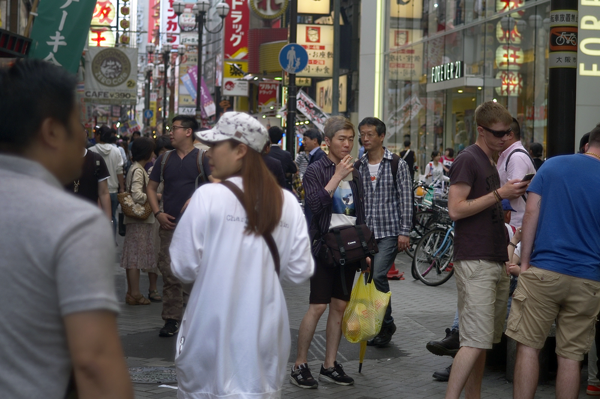

Subtractive photography
April 2nd, 2024
Bellevue, WA

Subtraction not addition
Photography can be seen as a subtractive process and outcome. Anytime you are taking a photo, you as a photographer
decide what will be in the frame. Will it be a person, a landmark, a busy street? There is a specific and intentional decision when
taking a photograph to identify a subject. Everything else is secondary.
The role that everything else plays in that photo is
like a support role to the main role of the subject. Oftentimes the other things in the frame detract from the subject,
can steal attention away from the subject. This is why some photographers choose to be more subtractive when composing their photos.

Would this photo be better if the street was less busy? Who knows!
Sculpting David
From the video esssay by Andre Pel, he makes the argument that for a lot of photographers at all levels, we should re-examine our photographs and think about whether subtraction would help "improve" our photography. There are 2 primary ways we can do this.
- We can crop or frame tighter on the subject, removing background and other distractions from our image before we click the shutter.
- We can change our composition, find different angles and look for other ways to isolate/center our subject being aware of any secondary elements in the photo.
Andre brings up a quote, associated with Michelangelo when asked how he created the statue of David.
It's simple,
― Michelangelo (maybe?)
I just removed everything that is not David.
Finding your photo
This is a good example of how an artist with a subtractive mindset would approach their craft. I found this to be a very simple way to understand subtractive photography. You have an artistic vision that you see in your minds eye. You use your tools (camera, lens, film, etc) as a method to literally isolate and create that which you see in your mind. This can be be using a longer focal length to isolate a subject, or waiting on the right timing when a person crosses the street over a reflection of water. In that moment, you have "found" your photo.
Photograph is not what you leave in,
― Andre Pel, Master This and Photography Becomes Effortless
it's what you leave out.

I actually like this photo more because of how busy it is. But the focus is still on the man in the center.
This isn't the only way
This is fine if that is the desired outcome, there are no "hard" rules for photographic vision. Sometimes, the other things in the frame work well with the subject. This is not to say that we should only take minimalistic photographs of stark landscapes or subjects. There are a whole range of photographs that work because there are multiple subjects and busy backgrounds. This is meant as an exercise for photographers to try when taking photos. It all depends on the feelings and messages you want to convey with your photos.
References
- Youtube video Master This and Photography Becomes Effortless by Andrew Pel
- Blog post about Master this and photography becomes effortless on Andre Pel's website